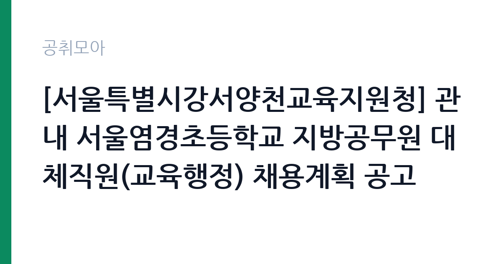

[교육청] [서울특별시강서양천교육지원청] 관내 서울염경초등학교 지방공무원 대체직원(교육행정) 채용계획 공고
서울특별시교육청 서울특별시강서양천교육지원청 · 서울 · 마감 2026-10-21 (D-4) · 출처 나라일터

한눈에 보는 모집 조건
| 기관 | 서울특별시교육청 서울특별시강서양천교육지원청 |
|---|---|
| 공고명 | [서울특별시강서양천교육지원청] 관내 서울염경초등학교 지방공무원 대체직원(교육행정) 채용계획 공고 |
| 고용형태 | 정규직 |
| 근무지 | 서울 |
| 게시일 | 2026-10-16 |
| 마감일 | 2026-10-21 (D-4) |
지원자격, 이렇게 읽으세요
- 교육행정 1명
- 접수 ~2026-10-21 마감
- 세부 조건은 원문 공고문 확인
교육행정직 대체직원은 지방공무원 임용 결격사유가 없고 응시연령을 충족해야 하며, 병역 요건도 확인 대상입니다. 대체직원은 휴직이나 결원으로 비는 자리를 채우는 신분이므로 계약 기간이 정해져 있습니다. 학교 행정실 업무를 바로 맡아야 하므로 문서 작성과 예산·물품 관리에 대한 기본 이해가 필요합니다. 세부 응시자격과 제출서류는 교육지원청이 배포하는 공고문 원문에서 확인해야 합니다.
이 공고의 포인트
교육행정직은 학교 행정실에서 예산·회계, 물품 관리, 교무 행정 지원, 민원 응대를 맡는 자리입니다. 초등학교 행정실은 인원이 적어 한 사람이 여러 업무를 동시에 처리해야 합니다. 강서양천교육지원청이 접수를 대행하기 때문에 지원 절차가 교육지원청 기준으로 통일되어 있고, 배치 학교는 서울염경초등학교로 명시되어 있습니다. 서울 서남권 학교에서 근무하며 교육행정 실무를 익힐 수 있는 기회입니다.
전형은 어떻게 진행되나
서류전형으로 자격 요건과 제출서류를 확인하고 면접전형을 거쳐 최종합격자를 선발하는 절차가 일반적입니다. 접수는 도착분 기준으로 판단하므로 우편이나 방문 접수 시 시각을 계산해야 합니다. 서류전형 합격자에게는 면접 일정이 개별 통지되며, 최종합격자는 채용 절차 완료 후 임용됩니다. 문의는 강서양천교육지원청 학교통합지원과 통합지원 2팀으로 하면 됩니다.
원문에서 확인한 전형 방식
1. 서울특별시강서양천교육지원청 관내 서울염경초등학교 지방공무원 대체직원[교육행정]을 채용합니다. 2. 관내 학교의 채용업무 경감을 위하여 교육지원청 학교통합지원과에서 공고 및 응시원서 접수 등의 업무를 대행합니다. 3. 공고문을 상세히 확인하시고 응시해주시기 바랍니다. [※ 접수기간: 2026. 10. 16.(금) ~ 10. 21.(수) 14:00 도착분까지] 4. 문의사항: 서울특별시강서양천교육지원청 학교통합지원과 통합지원 2팀 ☎02-2600-0958
이런 분께 추천해요
- 학교 행정실 근무를 처음 시작하려는 지원자
- 문서 작성과 예산·물품 관리 실무에 익숙한 사람
- 서울 강서·양천 생활권에서 출퇴근하려는 지원자
지원 전 체크리스트
- 접수 마감이 10월 21일 오후 2시 도착분까지임을 확인
- 대체직원 신분과 계약 기간을 공고문에서 확인
- 응시원서 서식과 필수 제출서류 목록 대조
- 병역 및 임용 결격사유 해당 여부 점검
모집 일정과 제출 타이밍
접수는 2026년 10월 16일부터 10월 21일 오후 2시까지입니다. 마감 시각이 오후 2시로 이례적으로 이르므로 오전 중 제출을 마치는 편이 안전합니다. 서류 심사 후 면접 일정이 개별 통보되고, 최종합격자는 임용 절차를 거쳐 배치됩니다. 채용 일정은 학교 사정에 따라 조정될 수 있어 접수 후에도 공고문과 교육지원청 안내를 확인하십시오.
직무 이해하기: 교육청
초등학교 행정실의 업무는 예산 편성과 집행, 물품 구입과 관리, 학교운영위원회 지원, 각종 공문 처리로 구성됩니다. 학기 초와 학년 말에는 물품 수요조사와 결산 업무가 몰리고, 학부모 민원 응대도 행정실에서 이뤄집니다. 교무실과의 협업이 잦아 교사가 요청하는 자료를 정확한 서식으로 빠르게 만들어주는 것이 핵심입니다. 담임 배정이나 급식 인원처럼 숫자가 얽힌 업무가 많아 꼼꼼함이 요구됩니다.
자기소개서 작성 팁
자기소개서는 행정 실무 경험을 구체적으로 정리하는 것이 좋습니다. 예산 집행이나 물품 관리, 문서 작성 업무를 해본 경험이 있다면 사용한 시스템과 처리 규모를 함께 적으십시오. 학교 행정이 교육 활동을 지원하는 일이라는 점을 이해하고 있다는 표현은 직무 이해도를 보여줍니다. 지원 동기는 지역과 근무지를 연결해 쓰면 설득력이 생깁니다.
면접 준비 포인트
면접은 행정 실무 상황에 대한 대응을 확인하는 질문이 중심입니다. 업무가 겹칠 때 우선순위를 어떻게 정할지, 민원인이 강하게 항의할 때 어떻게 응대할지 같은 질문이 나옵니다. 문서 작성 정확성과 개인정보 취급 태도도 평가 대상입니다. 대체직원이라는 신분과 계약 기간을 이해하고 있는지 확인하는 질문도 예상됩니다.
급여·근무조건 읽는 법
보수는 지방공무원 교육행정직 해당 직급의 보수 기준에 따라 책정되며, 대체직원은 근무 기간에 비례해 급여가 지급됩니다. 구체적인 금액과 수당 항목은 공고문에서 확인하십시오. 호봉은 경력에 따라 산정되고, 초과근무 수당과 정액급식비 등은 지방공무원 보수 규정을 따릅니다. 세금과 4대보험을 공제한 금액이 실수령액이며, 계약 기간이 끝나면 근로관계가 종료됩니다.
자주 묻는 질문
- 대체직원은 정규 공무원인가요?
결원이나 휴직을 대체하는 기간제 신분으로 임용됩니다. 정규 임용이 아니라 계약 기간이 정해진 자리입니다. - 접수는 학교로 하면 되나요?
아닙니다. 강서양천교육지원청 학교통합지원과에서 공고와 접수를 대행합니다. 문의는 02-2600-0958입니다. - 교육행정 경력이 없어도 지원할 수 있나요?
공고문의 응시자격을 충족하면 지원할 수 있습니다. 다만 문서·예산 실무 이해가 평가에 영향을 줍니다.
함께 보면 좋은 공고
[교육청] [서울특별시강서양천교육지원청] 관내 공립 병설유치원 및 초등학교 5개교 교육공무직원 대체직원 채용계획 공고 — 마감 2026-10-21[교육청] 정동고등학교 기간제 조리실무원 한시적(대체) 채용 계획 재공고 — 마감 2026-10-22[교육청] 2026학년도 한국삼육고등학교 기간제근로자(미화원)채용 공고 — 마감 2026-10-23출처: 나라일터 공개정보를 바탕으로 공취모아가 정리한 안내글입니다. 모집 조건·일정은 변경될 수 있으니 지원 전 반드시 원문 공고문을 확인하세요. 본 글은 정보 제공용이며 합격을 보장하지 않습니다.